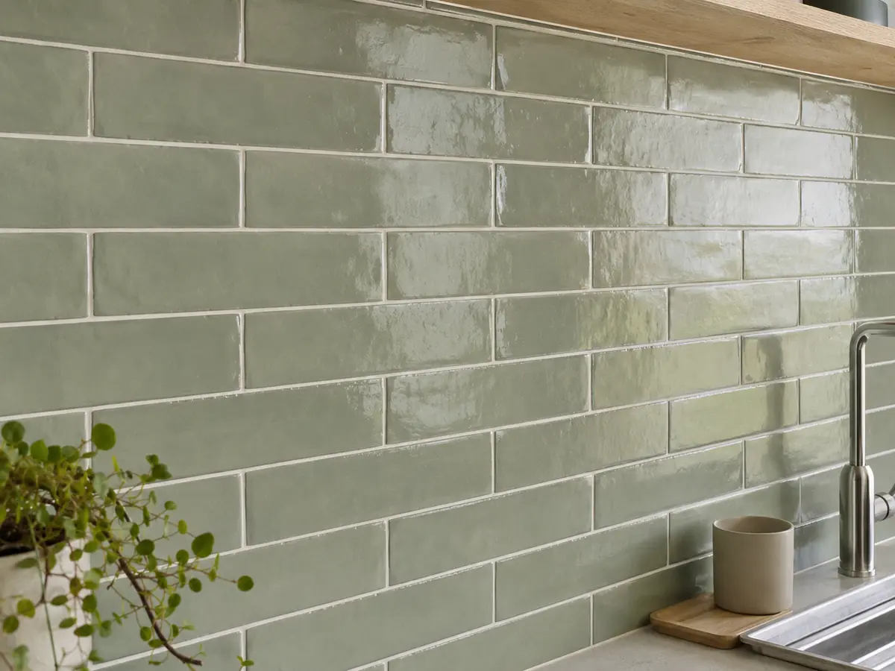
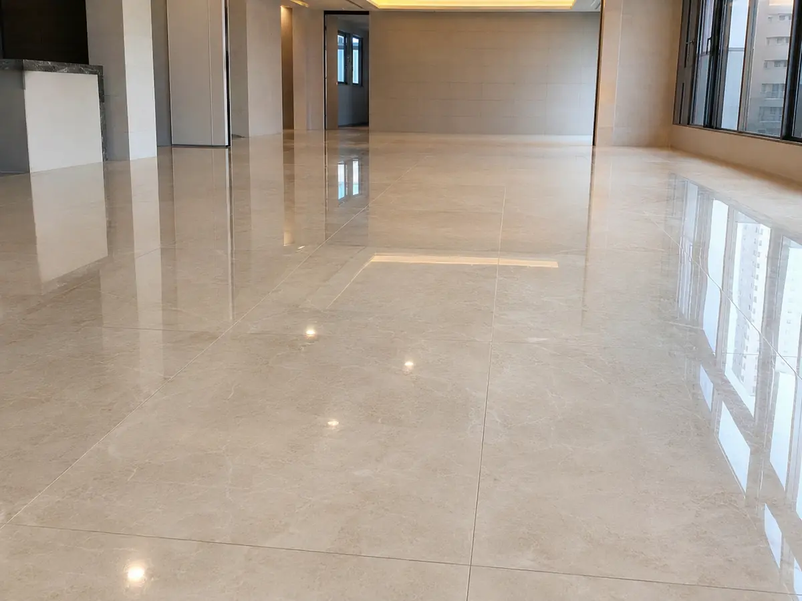
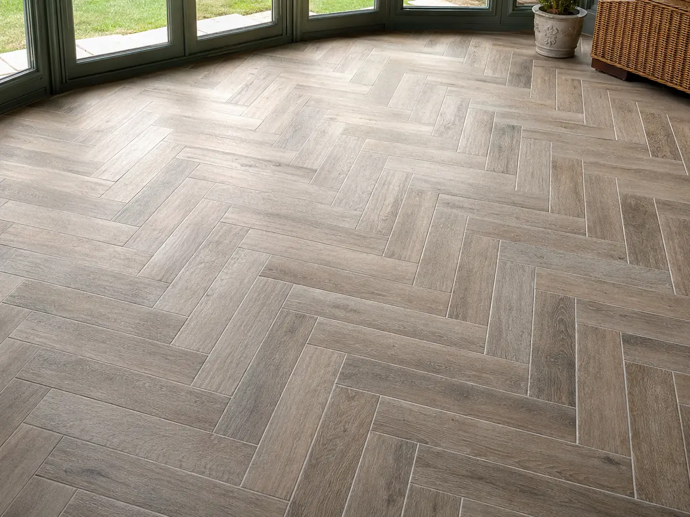

타일
한 줄 결론
‘떡 시공 vs 본드 시공’이 가장 큰 변수. 욕실 바닥은 떡 시공이 표준, 벽은 본드 시공이 빠르고 깔끔합니다.
재질별 비교
자기질
일반·외부 가능
10~25만원/㎡
내수성·내구성, 동결 안전
절단 어려움, 단가 ↑
도기질
벽 전용
5~12만원/㎡
절단·시공 용이, 디자인 다양
바닥·외부 사용 ✕
폴리싱
광택·고급
15~40만원/㎡
대리석 느낌, 공간 확장감
미끄러움, 정기 광택 관리
예시 사진 (재질 비교)
사진은 README 경로에 업로드하면 자동 노출됩니다.




사이즈별 특징
| 사이즈 | 특징 | 주 사용처 |
|---|---|---|
| 200×200mm | 전통, 미끄럼방지 | 욕실 바닥(소형) |
| 300×600mm | 가장 대중적 | 욕실 벽·바닥, 현관 |
| 600×600mm | 현대적 | 거실·발코니 |
| 600×1200mm | 대형판 | 거실·현관 (광택) |
| 1000×2000mm 포셀린 | 이음 적음·시공 난도↑ | 고급 거실·벽 |
시공 방식 — 떡 vs 본드
떡 시공 (압착)
전통·바닥 표준
모르타르를 한 장씩 떡처럼 올려 시공. 바닥 평탄 작업·구배 조정에 유리. 욕실 바닥은 거의 표준.
단가: ㎡당 5~7만원 (시공만)
본드 시공 (압착)
벽·빠른 시공
전용 접착제를 바른 평탄면에 바로 부착. 빠르고 깔끔하지만 하부가 평탄해야 함.
단가: ㎡당 3~5만원 (시공만)
줄눈 (그라우트) 관리
타일 마감의 절반은 줄눈입니다. 시공 시 마감과 거주 중 관리 모두 중요합니다.
줄눈 폭
욕실 2~3mm / 거실 1~2mm. 너무 좁으면 청소 어려움
색상
화이트는 오염 빠름. 라이트 그레이가 무난
에폭시 줄눈
방수·곰팡이 강함. 일반 줄눈 대비 1.5~2배 비용
코킹
벽-벽, 벽-바닥 코너는 줄눈 ✕ 코킹 ○ (수축·진동 흡수)
자주 발생하는 하자
- 들뜸·박리 — 떡 시공 시 모르타르 양 부족. 두드려서 빈 소리 나면 재시공.
- 줄눈 갈라짐 — 시공 후 수축. 코킹으로 보수.
- 구배 불량 — 욕실 바닥 물 고임. 시공 하자, 재시공 사유.
- 방수 불량 — 욕실 아래층 누수. 방수 시공 단계 확인 필수.
출처
- KS L 1001 (도자기질 타일)
- 건축공사 표준시방서 — 타일공사
- 한국세라믹기술원 시공 가이드
⚠
면책 가격·시공 정보는 시장 관행 기반 참고용입니다.